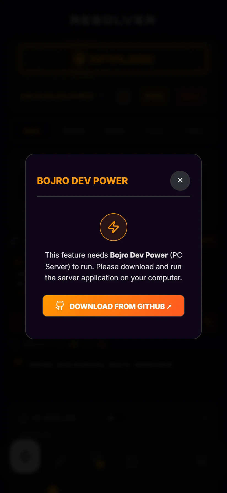
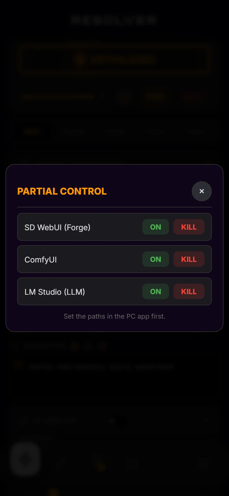

Docs / Advanced
Dev Power & Remote
Forge doesn’t have to be running when you sit down with your phone. Bojro Dev Power is a small companion app for your Windows PC: Resolver tells it to start or stop Forge, ComfyUI and LM Studio.
The PC app
- Download and run itFrom the Resolver GitHub releases (the book button in the app links there too). It runs in the tray.
- Set the pathsUnder Service Paths, Browse… to the file that starts each one (for Forge,
webui-user.bat), tick On for the ones to start, and Save. - Check the portAPI Port is 5000 by default; it must match Config → Connection → Local ports → Wake.
- OptionalStart on Boot (runs at Windows login), Minimize to Tray, Dark Mode.
Its window also has START ALL / STOP ALL, a Start / Stop per service with its state, and a Live Console showing each service’s output.

Anyone who can reach port 5000 can start and stop these programs. Don’t open that port to the internet; away from home, use a tunnel with access control (see below).
The buttons in the app
At the top of Generate, the Use Bojro Dev Power row:
Tap them below to see what each one sends and does:
In the app
PWK (Partial Control)
On the PC
- Book
- What Dev Power is and where to download the PC app.
- Power
- Starts every service ticked On. Give Forge a minute to load, then tap INITIALIZE ENGINE.
- PWK
- Partial Control: ON or KILL for Forge, ComfyUI or LM Studio alone. Handy to free the graphics card for one of them.
- KILL!
- Stops all three. The PC stays on.
Hide the row with Config → Interface → Show Dev Power.

Using Resolver away from home
At home the phone reaches the PC by its local address. Away from home it needs a tunnel: a public address that leads to your PC, such as ngrok or Cloudflare Tunnel. Set-up steps are in Getting Started → Remote mode. In short:
- Run a tunnel to Forge’s portFor example
ngrok http 7860, and one to port 5000 if you use Dev Power. - Switch to REMOTEConfig → Connection → Connection mode → REMOTE, then paste the public addresses into Forge URL and Dev Power (Wake) URL.
- Behind Cloudflare Access?Turn on Cloudflare Zero Trust and paste a service token’s Client ID and Client secret: they’re sent with every request.
Live Preview is off on mobile data unless you allow it (Config → Live Preview), and the Data usage tracker shows what each job costs.